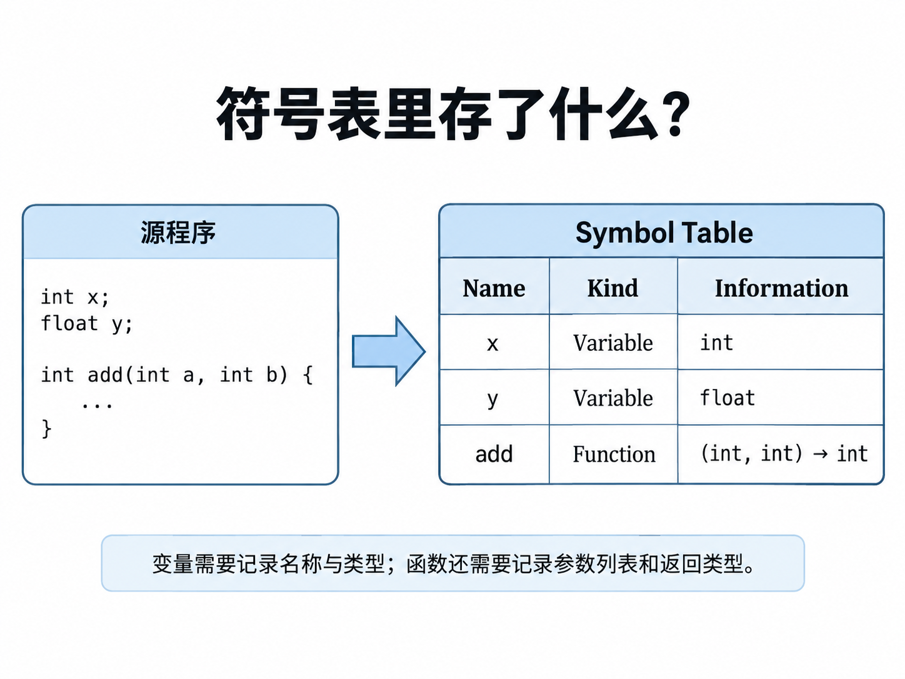
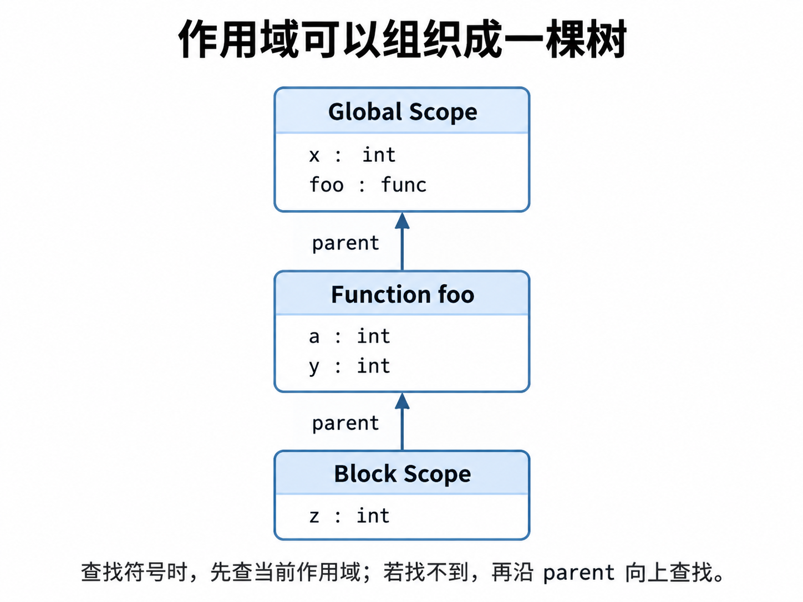
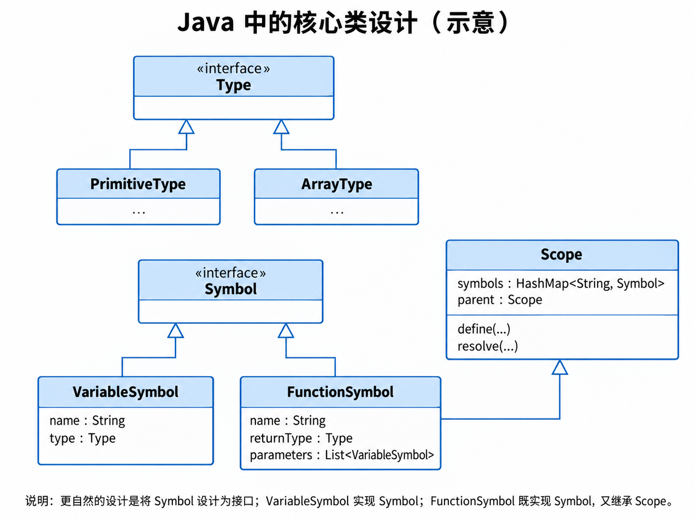
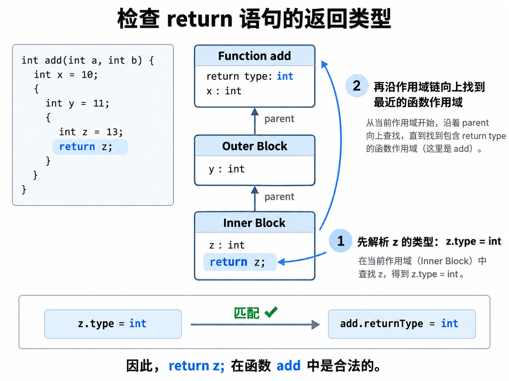

Week 7 - Semantic Part 1 - Symbol Table
我们需要在哪些层面验证程序的正确性？¶
我们在前面两章详细讲解了词法分析和语法分析，本章将在此基础上，从语义的角度来检查程序是否正确。请注意，从本周开始，实验内容可能会稍快于理论课内容，原因是语法与语义分析背后的理论较多，但实际基于 ANTLR 动手开展语法与语义分析并不太复杂。这种进度上的不一致不会影响课程学习。相反，先动手体验再琢磨背后的理论可以加深你对编译技术的理解。
回顾一下，在词法分析阶段，我们只关心输入的程序能否被 正确 地拆分成一个又一个词法符号；如果出现了未定义的符号，我们需要将其识别出来。进入语法分析阶段，我们则关注程序在语法结构上是否正确，例如：每个语句末尾是否添加了分号？函数调用时是否使用了括号？
然而，仅仅通过这两步验证还远远不够。简单来说，词法和语法分析保证了程序在结构上 看上去 没有问题，而语义分析则要在此基础上，确保程序在逻辑上能够 说得通。这是什么意思呢？让我们通过下面这个程序来理解。
从语法角度看，这个程序是完全正确的：无论是函数定义还是赋值语句，其结构都符合语法规则。然而，你可能已经敏锐地发现了，这个程序在逻辑上充满了错误：
- 程序使用了变量
c，但在使用前并未定义。 - 赋值语句的右侧表达式
x + y也是错误的，因为变量x和y的类型不同，一般情况下不能直接进行加法运算。 main函数声明的返回值是int，但最后一句却返回了一个String类型的值。
上述这些都属于语义问题。语义分析的任务，就是要把这些问题全部检查出来，它是我们将程序翻译成 中间表示 之前的最后一道防线。
在语义分析中，作用域（Scope） 是一个至关重要的概念。简单来说，作用域定义了一个变量的“可见范围”——即它在程序的哪些部分是可访问的，在哪些部分是不可访问的。我们来看下面这个例子：
int main() {
int x = 10; // x 定义在这里
{
int y = 5; // y 只在内层的这对花括号范围内可见
int x = 11; // x 在子作用域（内层花括号内）内被重新声明和定义
x = x + y; // 这里的x指的是子作用域内定义的x，而不是外部的x
}
y = y + 1; // ❌ 错误：y 已经不在作用域内
}
在上面例子中：
- 我们在
main函数的子作用域中定义了一个新的int x = 11;。它与外部的x同名，但它是一个 新的、独立的变量 ，其作用范围仅限于这个子作用域。因此，x = x + y中的x指的是新定义的x。这种现象被称为 变量遮蔽（Variable Shadowing） 。当程序尝试访问一个变量时，会优先从当前作用域开始查找；如果找不到，再逐层向父作用域追溯，直到找到为止。通常情况下，父作用域的变量在子作用域中是可见的，除非被同名变量遮蔽。 - 变量
y的作用域仅限于内部的花括号{...}。当程序试图在花括号外部访问y时，就会因为y超出作用域而报错。
下面，我们来系统地梳理一下在语义分析阶段需要找出的几类典型问题。
1. 变量使用前是否已定义？¶
在使用一个变量之前，必须确保它已经被声明过。
示例（错误）：
2. 变量是否被重复定义？¶
在同一个作用域内，重复声明同名变量通常是语义错误。
示例（错误）：
3. 类型是否匹配？（类型检查）¶
赋值或运算时，值的类型必须符合变量或表达式的要求。例如，不能将字符串赋值给整型变量。
示例（错误）：
4. 表达式中参与运算的操作数是否兼容？¶
参与运算的各方必须是类型兼容的。例如，在大多数静态类型语言中，整数和字符串不能直接相加。
示例（错误）：
5. 函数调用方式是否正确？¶
函数调用时必须满足其定义的要求：
- 函数名是否存在？
- 传递的参数个数是否匹配？
- 传递的参数类型是否匹配？
示例（错误）：
6. return 语句的返回值是否与函数声明的返回值类型一致？¶
函数的实际返回值类型必须与声明的返回值类型相符。
void函数不能有返回值，而非void函数必须返回一个类型匹配的值。
示例（错误）：
7. 作用域规则是否被正确遵守？¶
变量只能在其定义的作用域内被访问。一旦离开该作用域，变量就变得不可访问。
示例（错误）：
符号表¶
了解了语义分析需要做什么之后，接下来的问题是：我们应该如何实现这些检查？我们以最简单的一条规则为例来探讨：
变量使用前是否已定义？
为了实现这一点，当解析器遇到变量定义时，就必须将该变量的信息记录在一张表中。后续遇到使用该变量的语句时，我们就可以通过查询这张表，来判断变量是否已被定义：如果在表中能查到，说明定义过，可以使用；反之，则说明未定义，应当报错。
那么，这张表中需要记录哪些信息呢？只记录变量名够吗？如果仅仅为了检查变量是否已定义，记录名称似乎是足够的。但考虑一下另一条规则：类型是否匹配？ 这时，只记录变量名就不够了，我们还必须记录变量的类型，以便在类型检查时进行比对。
同理，函数定义也需要被记录。只有将函数信息预先存入表中，我们才能在遇到函数调用时，通过查表来判断函数是否存在。同时，为了核实函数调用是否正确，我们还需要记录函数的参数列表（类型和数量）以及返回值的类型。

接下来，我们必须考虑作用域。一个程序包含多个作用域，它们之间存在嵌套（父子）或并列（兄弟）关系。我们可以很自然地将作用域的层级关系抽象成一棵树，每个作用域节点都包含该作用域内定义的变量和函数。这里有个小细节： 函数本身也构成一个作用域 。
在这样的模型中，每个作用域都可以看作一张独立的表，其中记录的变量和函数统称为 符号（Symbol） 。而这些作用域表构成的层级结构，整体就称为 符号表（Symbol Table） 。有了上述构想，你可能已经对符号表有了初步的认识。下面，我们来探讨如何用 Java 一步步实现这个符号表。
我们从最基本的构成单元 符号（Symbol） 开始。
假设我们的语言中主要存在两类符号：变量和函数，因此可以分别定义 VariableSymbol 和 FunctionSymbol。虽然它们表示的程序实体不同，但都具有一些共同的性质，例如都需要一个 名称（name），并且都具有与类型检查相关的 类型信息（type）。
因此，我们可以首先定义一个 Symbol 接口，用来描述所有符号都应具有的基本能力：
对于 VariableSymbol 来说，getType() 返回的就是变量本身的类型；而对于 FunctionSymbol 来说，则返回函数的返回值类型。
为了能够统一表示不同种类的类型，我们还可以定义一个 Type 接口，并让 PrimitiveType、ArrayType 等具体类型实现它。例如：
这样，无论一个变量是 int、float，还是一个数组，都可以统一使用 Type 表示。
VariableSymbol 的结构因此非常简单，它只需要保存变量名和变量类型：
public class VariableSymbol implements Symbol {
private final String name;
private final Type type;
// ...
}
相比之下，FunctionSymbol 还需要额外记录函数的 参数列表。由于每一个参数本身也是一个变量，因此可以直接使用 List<VariableSymbol> 表示：
接下来，我们来定义 作用域（Scope）。
作用域的核心职责是：记录当前范围内能够访问到的符号。因此，一个 Scope 内部需要维护一张从符号名称到符号对象的映射。例如，可以使用 HashMap：
以符号名称作为 Key 后，我们就可以较高效地完成符号的定义与查找。
一个 Map 还是多个 Map？
如果我们的语言规定变量和函数不能在同一作用域中使用相同名称，那么使用一个 Map<String, Symbol> 就足够了。
如果语言允许变量名和函数名分别处于不同的命名空间，那么也可以分别维护：
具体选择取决于语言本身的语义规则。
除了保存符号之外，每个作用域还需要保存一个指向 父作用域（Parent Scope） 的引用：
这样，当一个符号在当前作用域中不存在时，就可以继续沿着 parent 向外层作用域查找。
因此，Scope 至少需要提供两个核心操作：
- 定义符号（define）：将新的符号加入当前作用域。在加入之前，需要检查当前作用域中是否已经存在同名符号，从而发现重复定义。
- 查找符号（resolve）：首先在当前作用域中查找；如果没有找到，就沿着
parent向上继续查找，直到找到对应符号，或者抵达最外层的根作用域（Root Scope）。
例如：
public Symbol resolve(String name) {
Symbol symbol = symbols.get(name);
if (symbol != null) {
return symbol;
}
if (parent != null) {
return parent.resolve(name);
}
return null;
}
除了普通的块作用域之外，函数也是一种特殊的作用域。
函数具有两种不同的身份：
- 从外部来看，函数名可以被其他表达式引用，因此函数是一个 Symbol；
- 从内部来看，函数又可以包含参数、局部变量以及新的块作用域，因此函数本身也是一个 Scope。
因此，在 Java 中，可以让 FunctionSymbol 继承 Scope，同时实现 Symbol 接口：
public class FunctionSymbol extends Scope implements Symbol {
private final String name;
private final Type returnType;
private final List<VariableSymbol> parameters;
// ...
}
这样，一个函数就自然地同时具有“符号”和“作用域”两种身份。
例如，对于：
我们可以得到类似下面这样的作用域结构：
其中，add 作为一个函数符号被定义在 Global Scope 中；而 FunctionSymbol(add) 本身又作为一个作用域，保存参数 a、b 以及局部变量 x。

最后，我们来看一个具体的问题：如何检查函数中的 return 语句是否与函数返回类型匹配？
考虑下面的程序：
当语义分析器访问到：
时，需要完成两件事情。
首先，我们需要确定表达式 z 的类型。当前位于最内层的块作用域，因此首先在当前作用域中查找 z，得到：
接下来，我们还需要知道当前这条 return 语句属于哪个函数。
这里并不需要让 VariableSymbol z 保存“自己属于哪个函数”。在遍历语法树的过程中，语义分析器本身就可以维护一个 当前作用域（currentScope） 。因此，我们只需要从当前作用域开始，沿着 parent 不断向上查找：
直到遇到一个 FunctionSymbol：
Scope scope = currentScope;
while (scope != null) {
if (scope instanceof FunctionSymbol function) {
// 找到了当前 return 所属的函数
break;
}
scope = scope.getParent();
}
由于 FunctionSymbol 同时继承了 Scope，因此它本身就自然地出现在作用域链中。
此时，我们已经知道：
比较两者即可完成 return 语句的类型检查。
这种设计有一个很重要的好处：符号负责描述程序中的实体，作用域负责描述名字的可见范围，而语义分析器负责维护当前所处的作用域。 三者的职责彼此独立，因此整个实现会更加清晰。

以上就是实现一个简单符号表的大致思路。你可以基于这些想法，很快地构建出属于自己的符号表。至于如何将符号表与语法分析树结合使用，我们将在下一节进行介绍。练习题¶
我们正在为一个简单的脚本语言 SPLC 实现解释器。该语言支持变量定义、函数定义和嵌套作用域。变量查找遵循以下规则：
从 当前作用域 开始查找；若找不到，则沿着父作用域（parent）逐层向上，直到根作用域；若整条作用域链都找不到，则该变量未声明。
本实验在上一阶段词法/语法分析（ANTLR 生成的 SplcParser）基础上，完成**符号表** 的构建与三类静态语义检查。
1. 源代码下载路径：¶
2. 语言子集与本任务范围:¶
本次l练习**不考虑**以下内容：
-
if、while 等控制流语句；
-
数组类型（ArrayType）的语义检查；
-
return 返回值类型是否与函数返回类型匹配（# ReturnStmt）；
-
函数体内额外的 { ... } 复合语句块（# CombineStmt）。
Part A：补全 Scope.java¶
补全Scope.java，并通过所有的ScopeCheck里的样例。
Part B：全 Lab6Visitor 完成语义分析¶
1. 位置与错误输出格式
所有错误每条输出一行，格式为：
-
行号 从 1 开始（Token.getLine()）；
-
列号 从 0 开始（Token.getCharPositionInLine()），即标识符**首字符**所在列（最左列为 0）。
2. 需要实现的三类检查：
| 检查 | 触发条件 | 输出 |
|---|---|---|
| 变量重定义 | 同一作用域内出现同名变量（含形参与局部变量同名） | L:C: error: Redefinition of 'name' |
| 未声明使用 | 标识符沿作用域链无法解析 | L:C: error: Undeclared use of 'name' |
| 函数重声明 | 同一作用域内出现同名函数 | L:C: error: Redeclaration of 'name' |
3. 无错误时的正确输出
如果程序 没有任何语义错误 ，统计并输出 全局变量 与 全局函数签名（局部变量、形参不输出；顺序按声明先后）。每个变量、每个函数各占一行：
测试用例介绍：¶
本次测试用例不考虑，如果你们感兴趣可以自己练习：
- if, while 循环，
- 不考虑数组类型
- 不考虑返回值类型测试 # ReturnStmt
- 不考虑{}符合语句 # CombineStmt
- 不用考虑四则运算结果问题
测试1 ： 全局变量重定义
输出：
测试2 ： 函数重声明
int my_func(int a){}
int my_func2(char b){}
int my_func(int a, int b){}
int main() {
return 0;
}
char my_func2(int x){}
输出：
测试3: 形参重复、局部变量与形参重名
输出：
测试4 ： 未声明便使用
输出：
测试5 ： 正确程序
输出：